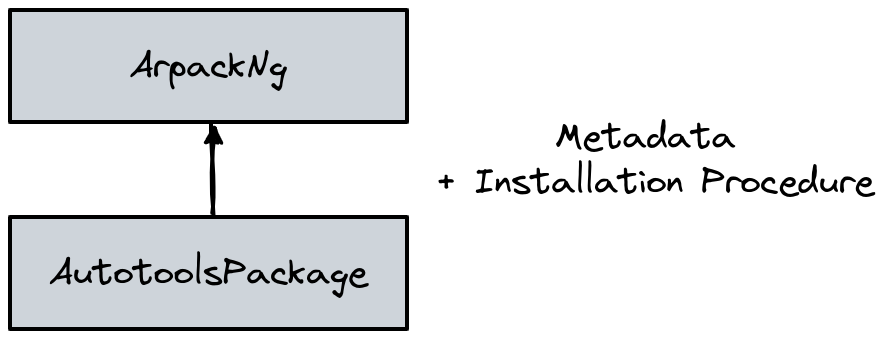
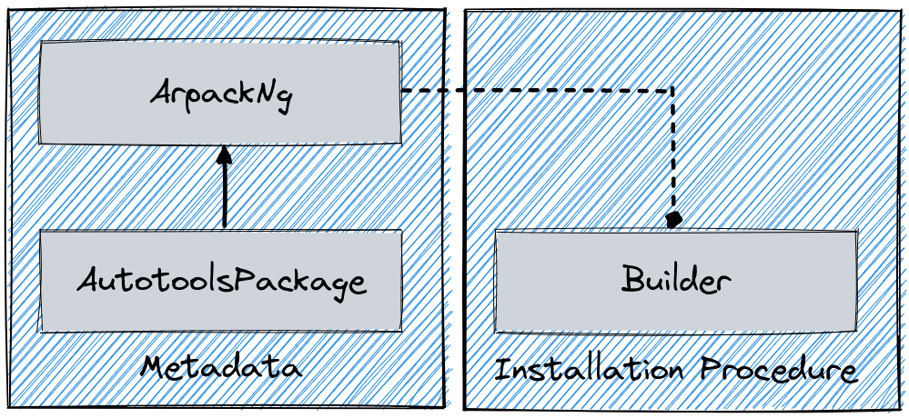
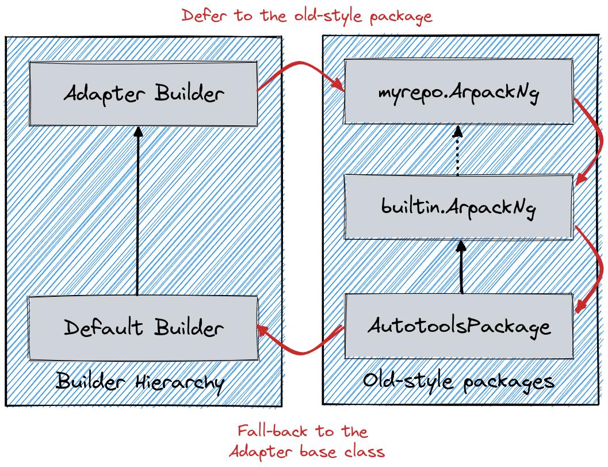

Developer Guide¶
This guide is intended for people who want to work on Spack itself. If you just want to develop packages, see the Packaging Guide.
It is assumed that you have read the Package Fundamentals and packaging guide sections and that you are familiar with the concepts discussed there.
Overview¶
Spack is designed with three separate roles in mind:
Users, who need to install software without knowing all the details about how it is built.
Packagers, who know how a particular software package is built and encode this information in package files.
Developers, who work on Spack, add new features, and try to make the jobs of packagers and users easier.
Users could be end-users installing software in their home directory or administrators installing software to a shared directory on a shared machine. Packagers could be administrators who want to automate software builds or application developers who want to make their software more accessible to users.
As you might expect, there are many types of users with different levels of sophistication, and Spack is designed to accommodate both simple and complex use cases for packages.
A user who only knows that they need a certain package should be able to type something simple, like spack install <package name>, and get the package that they want.
If a user wants to ask for a specific version, use particular compilers, or build several versions with different configurations, then that should be possible with a minimal amount of additional specification.
This gets us to the two key concepts in Spack's software design:
Specs: expressions for describing builds of software, and
Packages: Python modules that build software according to a spec.
A package is a template for building particular software, and a spec is a descriptor for one or more instances of that template. Users express the configuration they want using a spec, and a package turns the spec into a complete build.
The obvious difficulty with this design is that users underspecify what they want. To build a software package, the package object needs a complete specification. In Spack, if a spec describes only one instance of a package, then we say it is concrete. If a spec could describe many instances (i.e., it is underspecified in one way or another), then we say it is abstract.
Spack's job is to take an abstract spec from the user, find a concrete spec that satisfies the constraints, and hand the task of building the software off to the package object.
Packages are managed through Spack's package repositories, which allow packages to be stored in multiple repositories with different namespaces. The built-in packages are hosted in a separate Git repository and automatically managed by Spack, while custom repositories can be added for organization-specific or experimental packages.
The rest of this document describes all the pieces that come together to make that happen.
Directory Structure¶
So that you can familiarize yourself with the project, we will start with a high-level view of Spack's directory structure:
spack/ <- installation root
bin/
spack <- main spack executable
etc/
spack/ <- Spack config files.
Can be overridden by files in ~/.spack.
var/
spack/
test_repos/ <- contains package repositories for tests
cache/ <- saves resources downloaded during installs
opt/
spack/ <- packages are installed here
lib/
spack/
docs/ <- source for this documentation
external/ <- external libs included in Spack distribution
spack/ <- spack module; contains Python code
build_systems/ <- modules for different build systems
cmd/ <- each file in here is a Spack subcommand
compilers/ <- compiler description files
container/ <- module for spack containerize
hooks/ <- hook modules to run at different points
modules/ <- modules for Lmod, Tcl, etc.
operating_systems/ <- operating system modules
platforms/ <- different Spack platforms
reporters/ <- reporters like CDash, JUnit
schema/ <- schemas to validate data structures
solver/ <- the Spack solver
test/ <- unit test modules
util/ <- common code
Spack is designed so that it could live within a standard UNIX directory hierarchy, so lib, var, and opt all contain a spack subdirectory in case Spack is installed alongside other software.
Most of the interesting parts of Spack live in lib/spack.
备注
Package Repositories: Built-in packages are hosted in a separate Git repository at spack/spack-packages and are automatically cloned to ~/.spack/package_repos/ when needed.
The var/spack/test_repos/ directory is used for unit tests only.
See Package Repositories (repos.yaml) for details on package repositories.
Spack has one directory layout, and there is no installation process.
Most Python programs do not look like this (they use distutils, setup.py, etc.), but we wanted to make Spack very easy to use.
The simple layout spares users from the need to install Spack into a Python environment.
Many users do not have write access to a Python installation, and installing an entire new instance of Python to bootstrap Spack would be very complicated.
Users should not have to install a big, complicated package to use the thing that is supposed to spare them from the details of big, complicated packages.
The end result is that Spack works out of the box: clone it and add bin to your PATH, and you are ready to go.
Code Structure¶
This section gives an overview of the various Python modules in Spack, grouped by functionality.
Build environment¶
spack.stageHandles creating temporary directories for builds.
spack.build_environmentThis contains utility functions used by the compiler wrapper script,
cc.spack.directory_layoutClasses that control the way an installation directory is laid out. Create more implementations of this to change the hierarchy and naming scheme in
$spack_prefix/opt
Spack Subcommands¶
spack.cmdEach module in this package implements a Spack subcommand. See writing commands for details.
Unit tests¶
spack.testImplements Spack's test suite. Add a module and put its name in the test suite in
__init__.pyto add more unit tests.
Other Modules¶
spack.urlURL parsing, for deducing names and versions of packages from tarball URLs.
spack.errorSpackError, the base class for Spack's exception hierarchy.spack.llnl.util.ttyBasic output functions for all of the messages Spack writes to the terminal.
spack.llnl.util.tty.colorImplements a color formatting syntax used by
spack.tty.spack.llnl.utilIn this package are a number of utility modules for the rest of Spack.
Package Repositories¶
Spack's package repositories allow developers to manage packages from multiple sources. Understanding this system is important for developing Spack itself.
spack.repoThe core module for managing package repositories. Contains the
RepoandRepoPathclasses that handle loading and searching packages from multiple repositories.
Built-in packages are stored in a separate Git repository (spack/spack-packages) rather than being included directly in the Spack source tree.
This repository is automatically cloned to ~/.spack/package_repos/ when needed.
Key concepts:
Repository namespaces: Each repository has a unique namespace (e.g.,
builtin)Repository search order: Packages are found by searching repositories in order
Git-based repositories: Remote repositories can be automatically cloned and managed
Repository configuration: Managed through
repos.yamlconfiguration files
See Package Repositories (repos.yaml) for complete details on configuring and managing package repositories.
Package class architecture¶
备注
This section aims to provide a high-level knowledge of how the package class architecture evolved in Spack, and provides some insights on the current design.
Packages in Spack were originally designed to support only a single build system. The overall class structure for a package looked like:
{kind=link}

In this architecture the base class AutotoolsPackage was responsible for both the metadata related to the autotools build system (e.g. dependencies or variants common to all packages using it), and for encoding the default installation procedure.
In reality, a non-negligible number of packages are either changing their build system during the evolution of the project, or using different build systems for different platforms. An architecture based on a single class requires hacks or other workarounds to deal with these cases.
To support a model more adherent to reality, Spack v0.19 changed its internal design by extracting the attributes and methods related to building a software into a separate hierarchy:
{kind=link}

In this new format each package.py contains one *Package class that gathers all the metadata, and one or more *Builder classes that encode the installation procedure.
A specific builder object is created just before the software is built, so at a time where Spack knows which build system needs to be used for the current installation, and receives a package object during initialization.
Compatibility with single-class format¶
Internally, Spack always uses builders to perform operations related to the installation of a specific software.
The builders are created in the spack.builder.create function.
def create(pkg: spack.package_base.PackageBase) -> "Builder":
"""Given a package object with an associated concrete spec, return the builder object that can
install it."""
if id(pkg) not in _BUILDERS:
_BUILDERS[id(pkg)] = _create(pkg)
return _BUILDERS[id(pkg)]
To achieve backward compatibility with the single-class format Spack creates in this function a special "adapter builder", if no custom builder is detected in the recipe:
{kind=link}

Overall the role of the adapter is to route access to attributes of methods first through the *Package hierarchy, and then back to the base class builder.
This is schematically shown in the diagram above, where the adapter role is to "emulate" a method resolution order like the one represented by the red arrows.
Writing commands¶
Adding a new command to Spack is easy.
Simply add a <name>.py file to lib/spack/spack/cmd/, where <name> is the name of the subcommand.
At a bare minimum, two functions are required in this file:
setup_parser()¶
Unless your command does not accept any arguments, a setup_parser() function is required to define what arguments and flags your command takes.
See the Argparse documentation for more details on how to add arguments.
Some commands have a set of subcommands, like spack compiler find or spack module lmod refresh.
You can add subparsers to your parser to handle this.
Check out spack edit --command compiler for an example of this.
Many commands take the same arguments and flags.
These arguments should be defined in lib/spack/spack/cmd/common/arguments.py so that they do not need to be redefined in multiple commands.
<name>()¶
In order to run your command, Spack searches for a function with the same name as your command in <name>.py.
This is the main method for your command and can call other helper methods to handle common tasks.
Remember, before adding a new command, think to yourself whether or not this new command is actually necessary. Sometimes, the functionality you desire can be added to an existing command. Also, remember to add unit tests for your command. If it is not used very frequently, changes to the rest of Spack can cause your command to break without sufficient unit tests to prevent this from happening.
Whenever you add/remove/rename a command or flags for an existing command, make sure to update Spack's Bash tab completion script.
Writing Hooks¶
A hook is a callback that makes it easy to design functions that run for different events. We do this by defining hook types and then inserting them at different places in the Spack codebase. Whenever a hook type triggers by way of a function call, we find all the hooks of that type and run them.
Spack defines hooks by way of a module in the lib/spack/spack/hooks directory.
This module has to be registered in lib/spack/spack/hooks/__init__.py so that Spack is aware of it.
This section will cover the basic kind of hooks and how to write them.
Types of Hooks¶
The following hooks are currently implemented to make it easy for you, the developer, to add hooks at different stages of a Spack install or similar. If there is a hook that you would like and it is missing, you can propose to add a new one.
pre_install(spec)¶
A pre_install hook is run within the install subprocess, directly before the installation starts.
It expects a single argument of a spec.
post_install(spec, explicit=None)¶
A post_install hook is run within the install subprocess, directly after the installation finishes, but before the build stage is removed and the spec is registered in the database.
It expects two arguments: the spec and an optional boolean indicating whether this spec is being installed explicitly.
pre_uninstall(spec) and post_uninstall(spec)¶
These hooks are currently used for cleaning up module files after uninstall.
Adding a New Hook Type¶
Adding a new hook type is very simple!
In lib/spack/spack/hooks/__init__.py, you can simply create a new HookRunner that is named to match your new hook.
For example, let's say you want to add a new hook called post_log_write to trigger after anything is written to a logger.
You would add it as follows:
# pre/post install and run by the install subprocess
pre_install = HookRunner("pre_install")
post_install = HookRunner("post_install")
# hooks related to logging
post_log_write = HookRunner("post_log_write") # <- here is my new hook!
You then need to decide what arguments your hook would expect.
Since this is related to logging, let's say that you want a message and level.
That means that when you add a Python file to the lib/spack/spack/hooks folder with one or more callbacks intended to be triggered by this hook, you might use your new hook as follows:
def post_log_write(message, level):
"""Do something custom with the message and level every time we write
to the log
"""
print("running post_log_write!")
To use the hook, we would call it as follows somewhere in the logic to do logging. In this example, we use it outside of a logger that is already defined:
import spack.hooks
# We do something here to generate a logger and message
spack.hooks.post_log_write(message, logger.level)
This is not to say that this would be the best way to implement an integration with the logger (you would probably want to write a custom logger, or you could have the hook defined within the logger), but it serves as an example of writing a hook.
Unit tests¶
Unit testing¶
Debugging Unit Tests in CI¶
Spack runs its CI for unit tests via Github Actions from the Spack repo. The unit tests are run for each platform Spack supports, Windows, Linux, and MacOS. It may be the case that a unit test fails or passes on just one of these platforms. When the platform is one the PR author does not have access to, it can be difficult to reproduce, diagnose, and fix a CI failure. Thankfully, PR authors can take advantage of a Github Actions Action to gain temporary access to the failing platform from the context of their PRs. Simply copy the following Github actions yaml stanza into the GHA workflow file in the steps section of whatever unit test needs debugging.
- name: Setup tmate session
uses: mxschmitt/action-tmate@c0afd6f790e3a5564914980036ebf83216678101
Ideally this would be inserted somewhere after GHA checks out Spack and does any setup, but before the unit tests themselves are run. You can of course put this stanza after the unit-tests, but then you'll be stuck waiting for the unit tests to complete (potentially up to ~30m) and will need to add additional logic to the yaml in the case where the unit tests fail.
For example, if you were to add this step to the Linux unit test CI, it would look something like:
- name: Bootstrap clingo
if: ${{ matrix.concretizer == 'clingo' }}
env:
SPACK_PYTHON: python
run: |
. share/spack/setup-env.sh
spack bootstrap disable spack-install
spack bootstrap now
spack -v solve zlib
- name: Setup tmate session
uses: mxschmitt/action-tmate@c0afd6f790e3a5564914980036ebf83216678101
- name: Run unit tests
env:
SPACK_PYTHON: python
SPACK_TEST_PARALLEL: 4
COVERAGE: true
COVERAGE_FILE: coverage/.coverage-${{ matrix.os }}-python${{ matrix.python-version }}
UNIT_TEST_COVERAGE: ${{ matrix.python-version == '3.14' }}
run: |-
share/spack/qa/run-unit-tests
Note that the ssh session comes after Spack does its setup but before it runs the unit tests.
Once this step is present in the job definition, it will be triggered for each CI run. This action provides access to an SSH server running on the GHA runner that is hosting a given CI run. As the action runs, you should observe output similar to:
ssh 5RjFs7LPdtwGG8cwSPkGrdMNg@sfo2.tmate.io
https://tmate.io/t/5RjFs7LPdtwGG8cwSPkGrdMNg
The first line is the ssh command necessary to connect to the server, the second line is a tmate web UI that also provides access to the ssh server on the runner.
备注
The web UI has occasionally been unresponsive, if it does not respond within ~10s, you'll need to use your local ssh utility.
Once connected via SSH, you have the same level of access to the machine that the CI job's user does. Spack's source should be available already (depending on where the step was inserted). So you can just setup the shell to run Spack via the setup scripts and then debug as needed.
备注
If you have configured your Github profile with SSH keys, the action will be aware of this and require those keys to access the SSH session.
备注
If you are on Windows you'll be dropped into an MSYS shell, Spack is not supported inside MSYS, so it is strongly recommended to drop into a CMD or powershell prompt.
You will have access to this ssh session for as long as Github allows a job to be alive.
Once you have finished debugging, remove this action from the Github actions workflow.
If you want to continue a workflow and you are inside a session, just create a empty file with the name continue either in the root directory or in the project directory.
This action has a few option to configure behavior like ssh key handling, tmate server, detached mode, etc. For more on how to use those options, see the actions docs at https://github.com/mxschmitt/action-tmate
Developer environment¶
警告
This is an experimental feature. It is expected to change and you should not use it in a production environment.
When installing a package, we currently have support to export environment variables to specify adding debug flags to the build. By default, a package installation will build without any debug flags. However, if you want to add them, you can export:
export SPACK_ADD_DEBUG_FLAGS=true
spack install zlib
If you want to add custom flags, you should export an additional variable:
export SPACK_ADD_DEBUG_FLAGS=true
export SPACK_DEBUG_FLAGS="-g"
spack install zlib
These environment variables will eventually be integrated into Spack so they are set from the command line.
Developer commands¶
spack doc¶
spack style¶
spack style exists to help the developer check imports and style with mypy, Flake8, isort, and (soon) Black.
To run all style checks, simply do:
$ spack style
To run automatic fixes for isort, you can do:
$ spack style --fix
You do not need any of these Python packages installed on your system for the checks to work! Spack will bootstrap install them from packages for your use.
spack unit-test¶
See the contributor guide section on spack unit-test.
spack python¶
spack python is a command that lets you import and debug things as if you were in a Spack interactive shell.
Without any arguments, it is similar to a normal interactive Python shell, except you can import spack and any other Spack modules:
$ spack python
>>> from spack.version import Version
>>> a = Version("1.2.3")
>>> b = Version("1_2_3")
>>> a == b
True
>>> c = Version("1.2.3b")
>>> c > a
True
>>>
If you prefer using an IPython interpreter, given that IPython is installed, you can specify the interpreter with -i:
$ spack python -i ipython
In [1]:
With either interpreter you can run a single command:
$ spack python -c 'from spack.concretize import concretize_one; concretize_one("python")'
...
$ spack python -i ipython -c 'from spack.concretize import concretize_one; concretize_one("python")'
Out[1]: ...
or a file:
$ spack python ~/test_fetching.py
$ spack python -i ipython ~/test_fetching.py
just like you would with the normal Python command.
spack blame¶
spack blame is a way to quickly see contributors to packages or files in Spack's source tree.
For built-in packages, this shows contributors to the package files in the separate spack/spack-packages repository.
You should provide a target package name or file name to the command.
Here is an example asking to see contributions for the package "python":
$ spack blame python
LAST_COMMIT LINES % AUTHOR EMAIL
2 weeks ago 3 0.3 Mickey Mouse <cheddar@gmouse.org>
a month ago 927 99.7 Minnie Mouse <swiss@mouse.org>
2 weeks ago 930 100.0
By default, you will get a table view (shown above) sorted by date of contribution, with the most recent contribution at the top.
If you want to sort instead by percentage of code contribution, then add -p:
$ spack blame -p python
And to see the Git blame view, add -g instead:
$ spack blame -g python
Finally, to get a JSON export of the data, add --json:
$ spack blame --json python
spack url¶
A package containing a single URL can be used to download several different versions of the package.
If you have ever wondered how this works, all of the magic is in spack.url.
This module contains methods for extracting the name and version of a package from its URL.
The name is used by spack create to guess the name of the package.
By determining the version from the URL, Spack can replace it with other versions to determine where to download them from.
The regular expressions in parse_name_offset and parse_version_offset are used to extract the name and version, but they are not perfect.
In order to debug Spack's URL parsing support, the spack url command can be used.
spack url parse¶
If you need to debug a single URL, you can use the following command:
$ spack url parse http://cache.ruby-lang.org/pub/ruby/2.2/ruby-2.2.0.tar.gz
==> Parsing URL: http://cache.ruby-lang.org/pub/ruby/2.2/ruby-2.2.0.tar.gz
==> Matched version regex 0: r'^[a-zA-Z+._-]+[._-]v?(\\d[\\d._-]*)$'
==> Matched name regex 10: r'^([A-Za-z\\d+\\._-]+)$'
==> Detected:
http://cache.ruby-lang.org/pub/ruby/2.2/ruby-2.2.0.tar.gz
---- ~~~~~
name: ruby
version: 2.2.0
==> Substituting version 9.9.9b:
http://cache.ruby-lang.org/pub/ruby/2.2/ruby-9.9.9b.tar.gz
---- ~~~~~~
You will notice that the name and version of this URL are correctly detected, and you can even see which regular expressions it was matched to.
However, you will notice that when it substitutes the version number in, it does not replace the 2.2 with 9.9 where we would expect 9.9.9b to live.
This particular package may require a list_url or url_for_version function.
This command also accepts a --spider flag.
If provided, Spack searches for other versions of the package and prints the matching URLs.
spack url list¶
This command lists every URL in every package in Spack.
If given the --color and --extrapolation flags, it also colors the part of the string that it detected to be the name and version.
The --incorrect-name and --incorrect-version flags can be used to print URLs that were not being parsed correctly.
spack url summary¶
This command attempts to parse every URL for every package in Spack and prints a summary of how many of them are being correctly parsed. It also prints a histogram showing which regular expressions are being matched and how frequently:
$ spack url summary
==> Generating a summary of URL parsing in Spack...
Total URLs found: 7928
Names correctly parsed: 6653/7928 (83.92%)
Versions correctly parsed: 6565/7928 (82.81%)
==> Statistics on name regular expressions:
Index Right Wrong Total Regular Expression
0 2124 453 2577 r'github\\.com/[^/]+/([^/]+)'
1 6 0 6 r'gitlab[^/]+/api/v4/projects/[^/]+%2F([^/]+)'
2 101 49 150 r'gitlab[^/]+/(?!api/v4/projects)[^/]+/([^/]+)'
3 8 6 14 r'bitbucket\\.org/[^/]+/([^/]+)'
4 5 0 5 r'pypi\\.(?:python\\.org|io)/packages/source/[A-Za-z\\d]/([^/]+)'
6 12 1 13 r'\\?f=([A-Za-z\\d+-]+)$'
7 15 0 15 r'\\?package=([A-Za-z\\d+-]+)'
9 2 1 3 r'([^/]+)/download.php$'
10 4380 730 5110 r'^([A-Za-z\\d+\\._-]+)$'
==> Statistics on version regular expressions:
Index Right Wrong Total Regular Expression
0 4325 342 4667 r'^[a-zA-Z+._-]+[._-]v?(\\d[\\d._-]*)$'
1 1644 132 1776 r'^v?(\\d[\\d._-]*)$'
2 13 49 62 r'^[a-zA-Z+]*(\\d[\\da-zA-Z]*)$'
3 12 22 34 r'^[a-zA-Z+-]*(\\d[\\da-zA-Z-]*)$'
4 8 46 54 r'^[a-zA-Z+_]*(\\d[\\da-zA-Z_]*)$'
5 65 35 100 r'^[a-zA-Z+.]*(\\d[\\da-zA-Z.]*)$'
6 295 23 318 r'^[a-zA-Z\\d+-]+-v?(\\d[\\da-zA-Z.]*)$'
7 1 0 1 r'^[a-zA-Z\\d+-]+-v?(\\d[\\da-zA-Z_]*)$'
8 17 0 17 r'^[a-zA-Z\\d+_]+_v?(\\d[\\da-zA-Z.]*)$'
9 1 2 3 r'^[a-zA-Z\\d+_]+\\.v?(\\d[\\da-zA-Z.]*)$'
10 0 1 1 r'^[a-zA-Z\\d+]+_r?(\\d[\\da-zA-Z-]*)$'
11 38 98 136 r'^(?:[a-zA-Z\\d+-]+-)?v?(\\d[\\da-zA-Z.-]*)$'
12 3 0 3 r'^[a-zA-Z+]+v?(\\d[\\da-zA-Z.-]*)$'
13 16 39 55 r'^[a-zA-Z\\d+_]+-v?(\\d[\\da-zA-Z.]*)$'
14 12 6 18 r'^[a-zA-Z\\d+.]+_v?(\\d[\\da-zA-Z.-]*)$'
15 2 103 105 r'^[a-zA-Z\\d+-]+-v?(\\d[\\da-zA-Z._]*)$'
16 3 1 4 r'^[a-zA-Z\\d+._]+-v?(\\d[\\da-zA-Z.]*)$'
17 5 1 6 r'^[a-zA-Z+-]+(\\d[\\da-zA-Z._]*)$'
18 1 2 3 r'^[a-zA-Z\\d+_-]+-v?(\\d[\\da-zA-Z.]*)$'
20 10 0 10 r'[?&](?:sha|ref|version)=[a-zA-Z\\d+-]*[_-]?v?(\\d[\\da-zA-Z._-]*)$'
21 28 0 28 r'[?&](?:filename|f|get)=[a-zA-Z\\d+-]+[_-]v?(\\d[\\da-zA-Z.]*)'
22 16 1 17 r'github\\.com/[^/]+/[^/]+/releases/download/[a-zA-Z+._-]*v?(\\d[\\da-zA-Z._-]*)/'
23 25 0 25 r'gitlab\\.com/[^/]+/.+/-/releases/[a-zA-Z+._-]*v?(\\d[\\da-zA-Z._-]*)/downloads/'
24 25 324 349 r'(\\d[\\da-zA-Z._-]*)/[^/]+$'
This command is essential for anyone adding or changing the regular expressions that parse names and versions. By running this command before and after the change, you can make sure that your regular expression fixes more packages than it breaks.
Profiling¶
To profile Spack, use Python's built-in cProfile module directly:
$ python3 -m cProfile -s cumtime bin/spack find
$ python3 -m cProfile -o profile.out bin/spack find
Debugging concretization¶
When working on the ASP-based solver in lib/spack/spack/solver/, it is often useful to inspect the raw facts and rules that clingo sees, and to run clingo directly outside of Spack.
Generating ASP facts¶
The spack solve --show=asp flag dumps all ASP facts generated for a given spec to stdout:
$ spack solve --show=asp zlib-ng > zlib.lp
The resulting file contains both the package facts (versions, variants, dependencies) and the problem-specific facts derived from the user's configuration. It can be fed directly to clingo alongside the solver rules.
Running clingo directly¶
Once you have the facts file, you can invoke clingo directly.
This bypasses Spack's Python layer and lets you iterate on .lp rule files quickly.
On Linux (includes libc compatibility rules):
$ LP_FILES="lib/spack/spack/solver/concretize.lp \
lib/spack/spack/solver/heuristic.lp \
lib/spack/spack/solver/display.lp \
lib/spack/spack/solver/libc_compatibility.lp \
lib/spack/spack/solver/direct_dependency.lp"
$ clingo --verbose=3 --stats=2 --quiet=1,0,0 [--project-anonymous] \
--configuration=tweety --opt-strategy=usc,one \
--heuristic=Domain $LP_FILES zlib.lp
On macOS, replace libc_compatibility.lp with os_compatibility.lp.
Reading the output¶
--quiet=1,0,0 suppresses intermediate models and shows only the optimal answer.
--stats=2 appends a detailed statistics block at the end of the output.
The most useful fields are:
Grounding: total number of ground rules; a sudden increase usually indicates a rule is producing a combinatorial blowup.
Solve time: wall-clock time spent in the search phase alone, excluding grounding.
Optimization: the vector of objective values at each priority level, useful for verifying that the solver is minimizing the right criteria.
--verbose=3 prints each rule as it is grounded, which helps identify which rule is responsible for an unexpected grounding explosion.
Because the output is very large, redirect it to a file and search for the rule body of interest.
If a solve takes a long time to finish, you can interrupt it with Ctrl+C.
The partial statistics printed on interrupt are still useful for diagnosing the bottleneck.
Running the concretization test suite¶
After modifying any solver .lp file, verify correctness with:
$ pytest -n 8 lib/spack/spack/test/concretization
Releases¶
This section documents Spack's release process. It is intended for project maintainers, as the tasks described here require maintainer privileges on the Spack repository. For others, we hope this section at least provides some insight into how the Spack project works.
Release branches¶
There are currently two types of Spack releases: minor releases (1.1.0, 1.2.0, etc.) and patch releases (1.1.1, 1.1.2, 1.1.3, etc.).
Here is a diagram of how Spack release branches work:
o branch: develop (latest version, v1.2.0.dev0)
|
o
| o branch: releases/v1.1, tag: v1.1.1
o |
| o tag: v1.1.0
o |
| o
|/
o
|
o
| o branch: releases/v1.0, tag: v1.0.2
o |
| o tag: v1.0.1
o |
| o tag: v1.0.0
o |
| o
|/
o
The develop branch has the latest contributions, and nearly all pull requests target develop.
The develop branch will report that its version is that of the next minor release with a .dev0 suffix.
Each Spack release series also has a corresponding branch, e.g., releases/v1.1 has v1.1.x versions of Spack, and releases/v1.0 has v1.0.x versions.
A minor release is the first tagged version on a release branch.
Patch releases are back-ported from develop onto release branches.
This is typically done by cherry-picking bugfix commits off of develop.
To avoid version churn for users of a release series, patch releases should not make changes that would change the concretization of packages. They should generally only contain fixes to the Spack core. However, sometimes priorities are such that new functionality needs to be added to a patch release.
Both minor and patch releases are tagged.
As a convenience, we also tag the latest release as releases/latest, so that users can easily check it out to get the latest stable version.
See Updating releases/latest for more details.
PEP 440 compliance
Spack releases up to v0.17 were merged back into the develop branch to ensure that release tags would appear among its ancestors.
Since v0.18 we opted to have a linear history of the develop branch, for reasons explained here.
At the same time, we converted to using PEP 440 compliant versions.
Scheduling work for releases¶
We schedule work for minor releases through milestones and GitHub Projects, while patch releases use labels.
While there can be multiple milestones open at a given time, only one is usually active.
Its name corresponds to the next major/minor version, for example v1.1.0.
Important issues and pull requests should be assigned to this milestone by core developers, so that they are not forgotten at the time of release.
The milestone is closed when the release is made, and a new milestone is created for the next major/minor release, if not already there.
Bug reports in GitHub issues are automatically labelled bug and triage.
Spack developers assign one of the labels impact-low, impact-medium or impact-high.
This will make the issue appear in the Triaged bugs project board.
Important issues should be assigned to the next milestone as well, so they appear at the top of the project board.
Spack's milestones are not firm commitments so we move work between releases frequently. If we need to make a release and some tasks are not yet done, we will simply move them to the next minor release milestone, rather than delaying the release to complete them.
Backporting bug fixes¶
When a bug is fixed in the develop branch, it is often necessary to backport the fix to one (or more) of the releases/vX.Y branches.
Only the release manager is responsible for doing backports, but Spack maintainers are responsible for labelling pull requests (and issues if no bug fix is available yet) with vX.Y.Z labels.
The labels should correspond to the future patch versions that the bug fix should be backported to.
Backports are done publicly by the release manager using a pull request named Backports vX.Y.Z.
This pull request is opened from the backports/vX.Y.Z branch, targets the releases/vX.Y branch and contains a (growing) list of cherry-picked commits from the develop branch.
Typically there are one or two backport pull requests open at any given time.
Making minor releases¶
Assuming all required work from the milestone is completed, the steps to make the minor release are:
Create a new milestone for the next major/minor release.
Create a new label for the next patch release.
Move any optional tasks that are not done to the next milestone.
Create a branch for the release, based on
develop:$ git checkout -b releases/v1.1 developFor a version
vX.Y.Z, the branch's name should bereleases/vX.Y. That is, you should create areleases/vX.Ybranch if you are preparing theX.Y.0release.Remove the
dev0development release segment from the version tuple inlib/spack/spack/__init__.py.The version number itself should already be correct and should not be modified.
Update
CHANGELOG.mdwith major highlights in bullet form.Use proper Markdown formatting, like this example from v1.0.0.
Push the release branch to GitHub.
Make sure CI passes on the release branch, including:
Regular unit tests
Build tests
The E4S pipeline at gitlab.spack.io
If CI is not passing, submit pull requests to
developas normal and keep rebasing the release branch ondevelopuntil CI passes.Make sure the entire documentation is up to date. If documentation is outdated, submit pull requests to
developas normal and keep rebasing the release branch ondevelop.Bump the minor version in the
developbranch.Create a pull request targeting the
developbranch, bumping the minor version inlib/spack/spack/__init__.pywith adev0release segment. For instance, when you have just releasedv1.1.0, set the version to(1, 2, 0, 'dev0')ondevelop.Follow the steps in Publishing a release on GitHub.
Follow the steps in Updating releases/latest.
Follow the steps in Announcing a release.
Making patch releases¶
To make the patch release process both efficient and transparent, we use a backports pull request which contains cherry-picked commits from the develop branch.
The majority of the work is to cherry-pick the bug fixes, which ideally should be done as soon as they land on develop; this ensures cherry-picking happens in order and makes conflicts easier to resolve since the changes are fresh in the mind of the developer.
The backports pull request is always titled Backports vX.Y.Z and is labelled backports.
It is opened from a branch named backports/vX.Y.Z and targets the releases/vX.Y branch.
The first commit on the backports/vX.Y.Z branch should update the Spack version to X.Y.Z.dev0, and should have the commit message set version to X.Y.Z.dev0.
This ensures that if users check out an intermediate commit between two patch releases, Spack reports the version correctly.
Whenever a pull request labelled vX.Y.Z is merged, cherry-pick the associated squashed commit on develop to the backports/vX.Y.Z branch.
For pull requests that were rebased (or not squashed), cherry-pick each associated commit individually.
Never force-push to the backports/vX.Y.Z branch.
警告
Sometimes you may still get merge conflicts even if you have cherry-picked all the commits in order. This generally means there is some other intervening pull request that the one you are trying to pick depends on. In these cases, you will need to make a judgment call regarding those pull requests. Consider the number of affected files and/or the resulting differences.
If the changes are small, you might just cherry-pick it.
If the changes are large, then you may decide that this fix is not worth including in a patch release, in which case you should remove the label from the pull request. Remember that large, manual backports are seldom the right choice for a patch release.
When all commits are cherry-picked in the backports/vX.Y.Z branch, make the patch release as follows:
Create a new label
vX.Y.{Z+1}for the next patch release.Replace the label
vX.Y.ZwithvX.Y.{Z+1}for all PRs and issues that are not yet done.Manually push a single commit with commit message
Set version to vX.Y.Zto thebackports/vX.Y.Zbranch, that both bumps the Spack version number and updates the changelog:Bump the version in
lib/spack/spack/__init__.py.Update
CHANGELOG.mdwith a list of the changes.
This is typically a summary of the commits you cherry-picked onto the release branch. See the changelog from v1.0.2.
Make sure CI passes on the backports pull request, including:
Regular unit tests
Build tests
The E4S pipeline at gitlab.spack.io
Merge the
Backports vX.Y.ZPR with the Rebase and merge strategy. This is needed to keep track in the release branch of all the commits that were cherry-picked.Make sure CI passes on the last commit of the release branch.
In the rare case you need to include additional commits in the patch release after the backports PR is merged, it is best to delete the last commit
Set version to vX.Y.Zfrom the release branch with a single force-push, open a new backports PR namedBackports vX.Y.Z (2), and repeat the process. Avoid repeated force-pushes to the release branch.Follow the steps in Publishing a release on GitHub.
Follow the steps in Updating releases/latest.
Follow the steps in Announcing a release.
Submit a PR to update the
CHANGELOG.mdin thedevelopbranch with the addition of this patch release.
Publishing a release on GitHub¶
Create the release in GitHub.
Go to github.com/spack/spack/releases and click
Draft a new release.Set
Tag versionto the name of the tag that will be created.The name should start with
vand contain all three parts of the version (e.g.,v1.1.0orv1.1.1).Set
Targetto thereleases/vX.Ybranch (e.g.,releases/v1.0).Set
Release titletovX.Y.Zto match the tag (e.g.,v1.0.1).Paste the latest release Markdown from your
CHANGELOG.mdfile as the text.Save the draft so you can keep coming back to it as you prepare the release.
When you are ready to finalize the release, click
Publish release.Immediately after publishing, go back to github.com/spack/spack/releases and download the auto-generated
.tar.gzfile for the release. It is theSource code (tar.gz)link.Click
Editon the release you just made and attach the downloaded release tarball as a binary. This does two things:Makes sure that the hash of our releases does not change over time.
GitHub sometimes annoyingly changes the way they generate tarballs that can result in the hashes changing if you rely on the auto-generated tarball links.
Gets download counts on releases visible through the GitHub API.
GitHub tracks downloads of artifacts, but not the source links. See the releases page and search for
download_countto see this.
Go to readthedocs.org and activate the release tag.
This builds the documentation and makes the released version selectable in the versions menu.
Updating releases/latest¶
If the new release is the highest Spack release yet, you should also tag it as releases/latest.
For example, suppose the highest release is currently v1.1.3:
If you are releasing
v1.1.4orv1.2.0, then you should tag it withreleases/latest, as these are higher thanv1.1.3.If you are making a new release of an older minor version of Spack, e.g.,
v1.0.5, then you should not tag it asreleases/latest(as there are newer major/minor versions).
To do so, first fetch the latest tag created on GitHub, since you may not have it locally:
$ git fetch --force git@github.com:spack/spack tag vX.Y.Z
Then tag vX.Y.Z as releases/latest and push the individual tag to GitHub.
$ git tag --force releases/latest vX.Y.Z
$ git push --force git@github.com:spack/spack releases/latest
The --force argument to git tag makes Git overwrite the existing releases/latest tag with the new one.
Do not use the --tags flag when pushing, as this will push all local tags.
Announcing a release¶
We announce releases in all of the major Spack communication channels. Publishing the release takes care of GitHub. The remaining channels are X, Slack, and the mailing list. Here are the steps:
Announce the release on X.
Compose the tweet on the
@spackpmaccount per thespack-twitterslack channel.Be sure to include a link to the release's page on GitHub.
You can base the tweet on this example.
Announce the release on Slack.
Compose a message in the
#announcementsSlack channel (spackpm.slack.com).Preface the message with
@channelto notify even those people not currently logged in.Be sure to include a link to the tweet above.
The tweet will be shown inline so that you do not have to retype your release announcement.
Announce the release on the Spack mailing list.
Compose an email to the Spack mailing list.
Be sure to include a link to the release's page on GitHub.
It is also helpful to include some information directly in the email.
You can base your announcement on this example email.
Once you have completed the above steps, congratulations, you are done! You have finished making the release!